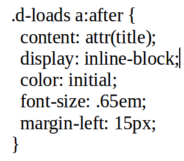

Attribute selectors target those elements that share a common attribute: For example, if we wanted to target all elements that have a class attribute, we could style the css using the attribute selector for class. [class] { css styles; } Even if the particular classes are different, the [class] attribute will target those elements with a class attribute in the html code. Example: class="someClass".
We can use the element tag and attribute selector: form[class="form-contact"] to be more specific. We can also use the attribute selector for the div element. div[id="container"] Using these element tag selectors makes it easier to see at a glance the kinds of elements we are styling. It makes forming a mental picture easier.
One drawback of using the element tag [attribute] selectors is that there is a interpreting cost for the browser. It may take more time for the browser to load. Thus for the most part, it is best to use the .class and #id selectors.
One instance where it is preferable to use the element tag and attribute selectors is on forms, with a bunch of particular kinds of user input. We can target only those parts of the form desired by using the attribute selectors, which will target only the particular attributes of a form, like text boxes. The syntax for the input element tag and type attribute selector is: input[type="text"] or input[type="email". The attribute 'type' is listed inside the brackets while the tag of the element is just outside and to the left.
Again, if we want to generalize and target a particular attribute regardless of its value, we can use the attribute selector. Example: input[placeholder] { cssStyles;} 'placeholder' is the kind of attribute we want to target. placeholder may be used for empty email fields.
I styled the following input buttons with various button type attributes so that the mouse pointer changes to a finger pointing to the button. input[ type="reset" ], input[ type="submit" ], input[ type="button" ] { cursor: pointer;}
Suppose we wanted to style all links that open a new page. We would want to focus on the those links with the target attribute and value of _blank. The syntax is: a[target="_blank"] { cssProperty: someValue;}
Above, I styled the buttons with attribute selectors as an example, however, a more efficient method might be to give various buttons the class="btn" and then define the css rules for multiple buttons at once. This is an example of DRY coding, and it helps to keep patterns of styling more readily discernable and easier to code all in one rule, rather than jump around to every unique element and code it individually."
Any time we want to target two different elements with one selector, we will need to use a combinator.
Using white space after a selector technically denotes a combinator. Example: li a {property: value;} targets the descendant link elements of the parent li element, or links that live in a li element.
The greater than, plus, and tilde are three other combinators.
The greater than symbol [>] is what's known as a child combinator. Selectors that use child combinators are called child selectors because they target direct children of parent elements. By direct child, we mean the children, and not any grandchildren or further removed.
The plus sign symbol [+] represents an adjacent sibling combinator because it is a selector for adjacent siblings on the page. The adjacen elements can be of similar class, or type of element. The css rule will affect as many elements as are in sequence until a different type of element disturbs the connection from first element to adjacent element. For example, suppose we have two buttons and wanted to specifically target the second button and any buttons that are in sequence and connected uninterrupted to the first button [example html elements: button button button] that may come after the second later in the html code (down the page). We can use the class (.btn for example) and then use the sibling combinator: .btn + .btn {property: value;}. This will target the siblings of the class .btn elements. The first element will not be styled; only the connected siblings in the chain of like-elements.
The tilde symbol [~] represents the general sibling combinator selector. For example h6 ~ h6 {property: value;} This would target all 'Heading 6' elements that follow the first referenced h6 element. Only those that follow the element will be affected, not the elements that precede the selector. The selector will target all of the elements and not just those that are conntected in sequence. Example: h6 ~ h6 {property: value;} will target the h6 elements that come after the referenced h6 element even if the following h6 elements are interrupted by other types of elements in the normal flow of the html code.
For example, say we want to target the first or last list item in an order or unordered list. We would use the following syntax: li:first-child {property: value;} li:last-child {property: value;} Here we are targeting the list items that are the first or last items in the parent element ul or ol.
If we want to target only children of parent elements we can use :only-child {property: value;}. This will target any elements on the page that are the only children of ANY parent elements. If we want to get more specific, we can use the element tag name preceding the :only-child css rule."
The :empty pseudo-class will target those leements that do not contain content. If we want to be more specific, we can use the element tag before the :empty pseudo-class like so: li:empty {property: value;} This is useful for highlighting a field or text area that may have not been filled in by the user or show the programmer where there are unneccessary tag elements on the page.
We can target an item based upon its attribute value using the "begins with" attribute selector. Suppose we have several picture with the src attribute. We can target the src value using the "begins with" attributes selector. For example suppose we have two image tags with the src attributes and values: src="img/thumbnails/trees.jpg" src=img/thumbnails/falls.jpg". We can target both of them using: img[src^="img/thumbnails"] { property: value;} The img element tag denotes we are targeting an image, and the [ ] represents an attribute selector that will contain the type of attribute we want to target, in this case, the src attribute. The ^ carrot denotes that we want to target those substrings of the src attribute that begin with the substring in quote-marks.
We can target those elements that have ending attribute substring using the "ends with" attribute selector. Suppose we want to target all links that end in .pdf. The syntax is a[href$=".pdf"] {property: value;}. We can target the JPG and Zip files as well.
The syntax for the contains substring selector is: a[href*="some-Portion-Of-The-Path-Name"] This selector will target all [a] links with the href attribute containing the substring inside quote marks.
When a content management system (CMS) or framework allows no access to HTML.
When we are unable to add classes or IDs to elements.
With dynamic lists or image galleries. We may not know the individual lists or images being added, but we can use their type or path.
:checked allows us to target those form elements that have been checked, and :disabled allows us to target those elements with the 'disabled' attribute, like email fields and such. The point is to alert the user that a specific input field is not to be used by design.
We can target specific groups of elements using :nth-child. The following syntax: li:nth-child( argument ) {property: value;} Inside the parentheses, we pass an argument to the :nth-child.
Odd and even are two keyword arguments we can use to target the li items. Odd will target all of the odd elements in the list, and even will target all of the even elements in the list.
We can also use an integer. The index value starts at one.
We can also use expressions: (an+b) So we tell the browser where to start by using the index value we want to target in place of the [b] variable in the expression (an+b), then we can choose which additional :nth-children to target by placing an index value for [a]. So (2n+3) would first target the 3rd index value, or 3rd item in the list, and then target every second item that follows. The [n] always stays the same. li:nth-child(2n+1) { background:lime; }
We can shorten the expression when [a] and [b] are certain values. For example if [a] is 1, we can just write (n+3). This will target the 3rd index item in the list, and then every one item after. If [b] is 0, we can write (2n). This will first target the second item in the list and then every second item. If our expression were (3n+3) we can omit the [b] value, because the result will be the same. as (3n), because we start at the 3rd index item and continue to target every 3rd item in the list.
We can also use negative a values to target particular items that precede the [b] value. Example: (-n+3) would target the 3rd index item first, then each 1 item before the [b] item. So if you wanted to target the first 4 items, you would write (-n+4).
The :nth-of-type element selector will target the element we choose regardless of any additional elements that are added to the list later. This is a more desirable solution than :nth-child because if we later add a new element in the list in the normal HTML flow, then the :nth-child we attempt to target will no longer be in it's necessary position. If we use the :nth-of-type, we can target the desired element even if a new element is added to the normal HTML flow. Example: Suppose we have a list of 5 divs and we want to target the 4th div using :nth-child(4) {property: value;}. If later a new element is added to the list just before the 4th div, for example an h1 element, then the 4th div is now the 5th child, and will not fit the target selected. We can more accurately target the 4th div element using the following syntax: div:nth-of-type(4){property: value;}. Now the browser will look for the 4th div in the list, no matter the position of other types of elements that may come before it in the normal HTML flow.
element:nth-of-last-type(argument) will begin from the last element in the parent container of that type listed in the element position of the previous syntax. It will then target using the index value listed in the argument. It is the reverse of :nth-of-type. So div:nth-of-last-type(2) {property: value;} will start with the last div element in the parent container and count backwards for 2 elements of that type; that element will be targeted with css code.
These :nth-of-type and :nth-of-last-type selectors can help us out in a pinch when we have no control over the HTML code.
:root selects the element that is the highest level parent. Normally, this would be the html element. The syntax: :root {property: value;} :root has more specificity than the general html selector, therefore it will override. Root can be used with other types of markup languages or formats, like svg and xml.
:target selects an element when that element is the target of a link. Id's have browser functionality and can be used as landmarks and anchors on a page, for in-page navigation. Example id="top". :target { background: black; color white;} Suppose I click on a link that has an href="#top". The element with the id="top" will be the target of the css :target. I can be more specific if I add the particular id to target: #top:target { property: value;}
We can use the negation selector to target all elements on a page that do not have the particular class, id, attribute, and or value we set using the :not selector. Example, say we want to target all divs on a page that do not have the id of '#two'. The syntax: div:not(#two) {property: value;}. Another example would be to target all input elements except those with the type and value of submit. Example: input:not([type="submit"]) { property: value;}
Another good use case for the :not selector is for the targeting of all but the first or last child in a row of columns or navigation links. Example syntax: .col:not(:first-child) {property: value;} And if we wanted to target all links except for the first child we could use the following syntax: nav a:not(:first-child) {property: value;}
Pseudo-elements target parts of an element as it is rendered at the various viewport sizes. For example, suppose we wanted to target the first line of a paragraph with the class '.intro'. We would use the following syntax: .intro:first-line {property: value;} This will style the first line no matter how the viewport is sized. The pseudo-element is not part of the Document Object Model (DOM), but it describes the way in which elements are displayed at various viewport dimension renderings. This paragraph is styled using the :first-line and :first-letter pseudo-element. The huge 'P' is known as a 'drop-capital' or 'drop-cap' for short.
These elements let us insert virtual elements before and after an element's content. These elements are visable to the user and allow themselves to be styled by css but they do not appear in the source code. For every element on the page, we can generate two more elements: one before and one after. This is called generated content. Example source code to follow.
If we want to display the words, we place them inside quotes." If we want to use an img background, we use no quotes and the url(path); We can choose to add an element before and after, or one or the other by using the content: value pair. If we want text we place the text inside quotes. If we want an image, we can place that inside the url(../path). We can decide not to add either by listing "" the empty string inside the quotes. This way, we can style the background to create basic shapes before and after an HTML element. The before and after will not be reflected inside the HTML code, but it will still be described by the broswer. css-selectors-buttons is a powerful thing.
Here we will target the virtual element after the [a] link in the ul class .d-loads. We want to print the title attribute (we can choose just about any attribute we like) using the attr(title) feature. The results can be seen just below the Download Gallery h1 element above. The before and after content is applied as child content of the parent elements.
{kind=link}